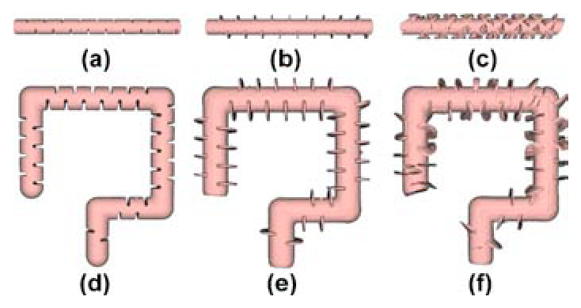
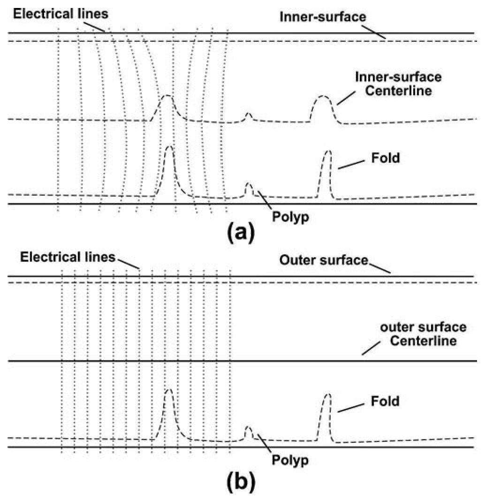
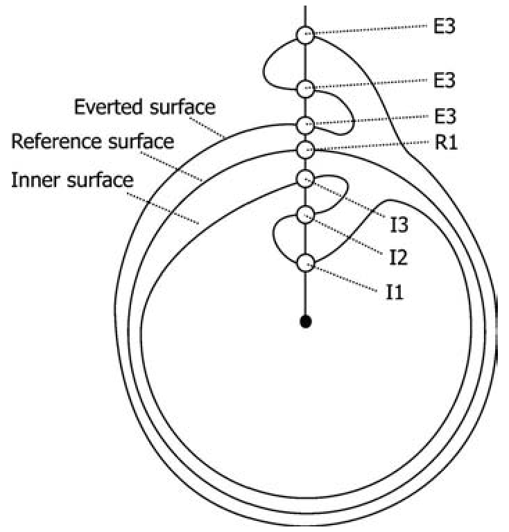
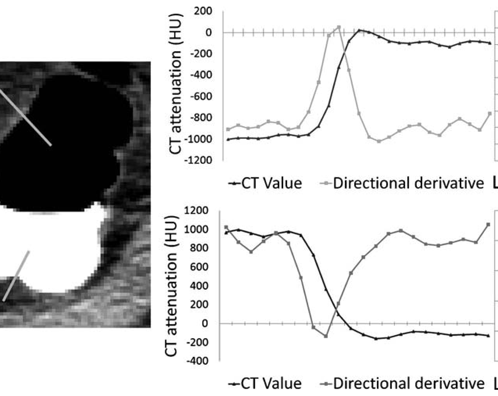
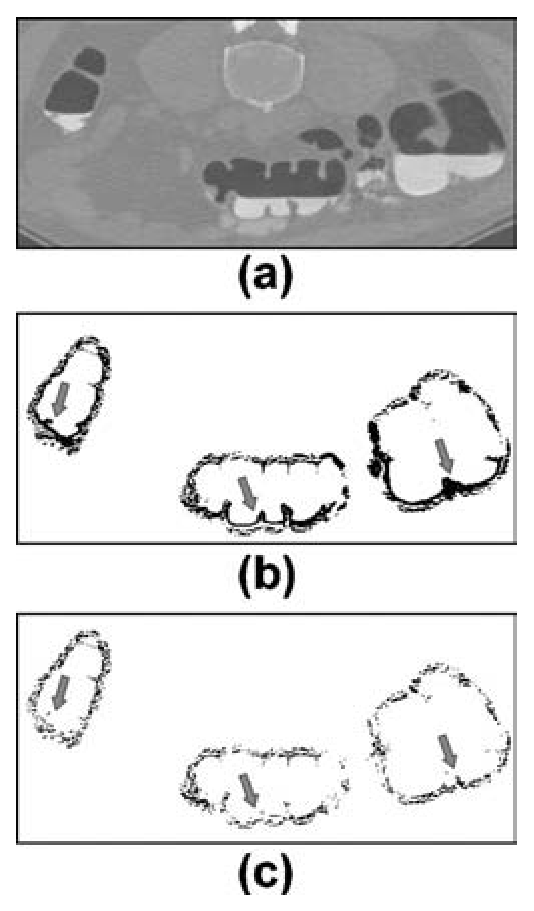
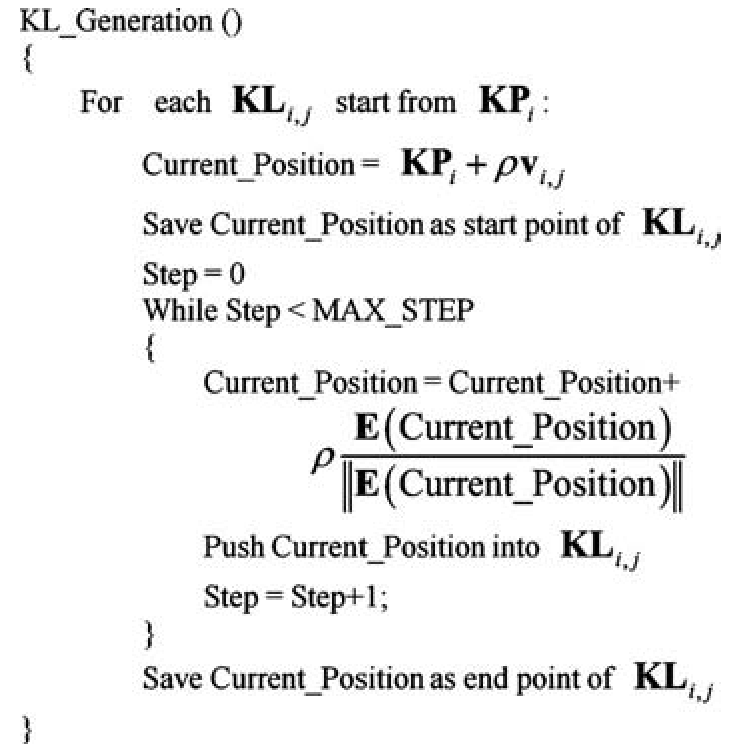
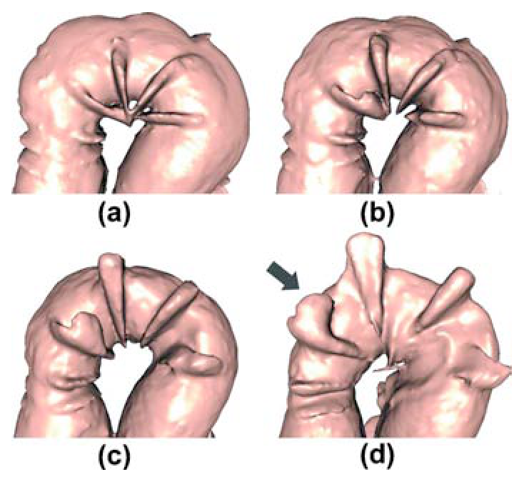
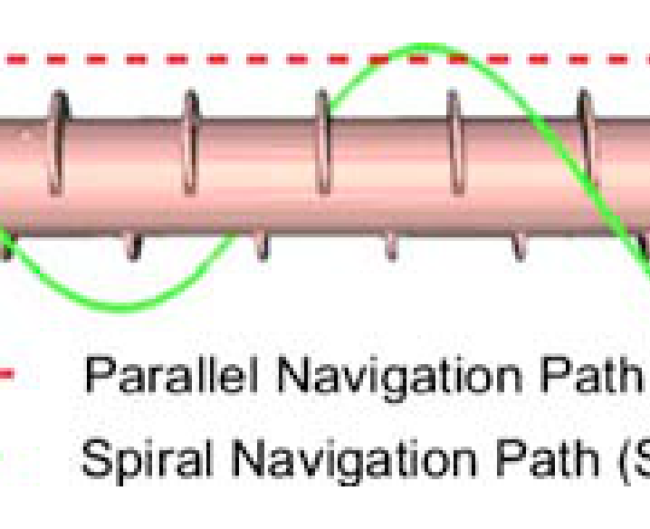
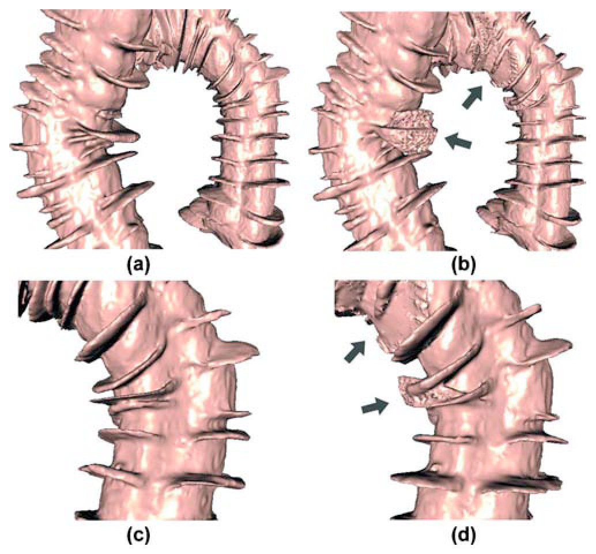
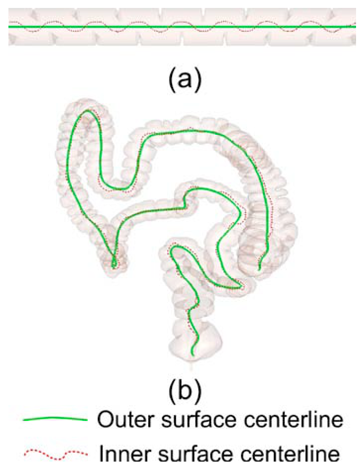

虚拟结肠外翻与旋转深读：为什么把肠子"翻过来看"，采样要沿光滑的外表面中心线？
导读。虚拟结肠外翻（Virtual Eversion，VE）是一种很反直觉的可视化：把结肠的内表面（黏膜面）翻到外面，同时保持结肠原来的弯曲走形——像把袜子外翻但不拉直。这样一来，整段黏膜面既能在全局视角一次看全、又能局部放大细看，不必像虚拟结肠镜那样沿管腔一路"飞越"。它和虚拟结肠镜（VC）、虚拟展平（VF）是三种互补的看结肠方式。麻烦在于：外翻的采样要沿"中心线"建电场来一对一地把内表面点翻到参考面外侧，而传统用的内表面中心线因为黏膜皱襞而蜿蜒锯齿，建出的电场线不规则、相互交叉，于是高曲率处出现"翻坏的区域"（皱襞重叠、表面撕裂），息肉藏在里面找不到。本文的回答是：改用结肠外表面中心线——外表面光滑、没有皱襞，中心线随之光滑，电场线均匀，外翻就忠实了。配套三件事：用并联双 sigmoid的改进 GAC 水平集把真外表面（连造影剂区）抠出来；用电场线 + 双线性插值的混合采样把外翻提速；用虚拟旋转把高曲率处挤成一团的结构转开看清。结果：外翻基于外表面中心线，比基于内表面的"翻坏区域"少 71%（6.8→1.9 个/例）；CT 上外翻计算耗时从 983 s 降到 75 s（少 92%）；阅片时间比虚拟结肠镜少约 77%，检出率持平。
{kind=link}

1. 核心问题：要"把肠子翻过来看"，沿哪条线采样？
虚拟结肠镜（VC）让医生沿管腔"飞越"检查，视野小、易把息肉漏在皱襞背面，且耗时。虚拟外翻是另一条路：把内表面（黏膜）翻到外侧、serosa 翻到内侧，同时保持结肠原本的弯曲路径。好处是两点——① 外翻后的肠子可以用全局视角快速浏览、再用局部视角精看；② 外翻保留了解剖结构的骨架、形状与空间关系。它不像展平那样把肠子摊平丢掉走形，而是"原地翻面"。
但外翻怎么实现？经典做法是在中心线上建一个"局部电场模型"：把中心线点当正电荷，放出电场线作采样线，沿采样线把内表面上的点逐点翻到参考面外侧。问题就卡在用哪条中心线：传统用内表面中心线，而内表面布满皱襞，导致中心线呈锯齿状蜿蜒。中心线越锯齿，建出的电场越不规则、电场线越容易相互交叉，外翻就越扭曲——高曲率处出现"翻坏的区域"（皱襞重叠、表面撕裂），息肉就藏在这些坏区里。
{kind=link}

问：为什么"中心线锯齿"会直接翻译成"外翻翻坏"？中间的因果链是什么？
引导：外翻 = 沿采样线做反射；采样线 = 中心线上的电场线。把这条链一节一节接起来。
答：链是这样的——皱襞让内表面凹凸 → 内表面中心线被带得锯齿 → 以锯齿中心线点为电荷的局部电场不规则 → 放出的电场（采样）线相互交叉、疏密不均 → 沿这些线把内表面点反射到外侧时错位 → 高曲率处出现皱襞重叠/表面撕裂的"翻坏区域"。换成外表面：外表面没有皱襞、本就光滑 → 外表面中心线光滑 → 电场均匀、电场线不交叉 → 反射忠实。一句话：外翻的质量，被采样中心线的光滑度决定，而光滑度由"沿内还是外表面"决定。
Takeaway：翻坏不是外翻算法本身的毛病，而是"沿锯齿内表面中心线采样"的后果。换成光滑外表面中心线，是从源头治。这与同组《结肠展平（外表面法）》是同一思想的两次应用。
2. 整体解读与贡献：一个核心 + 两个工程支撑 + 一个观察工具
作者明确提出的贡献。针对外翻临床化的三个痛点逐一作答：（1）翻坏区域多 → 改用外表面中心线做外翻采样，并提出改进的 GAC 水平集来抠出真外表面（连造影剂区也准）。（2）外翻太慢 → 设计混合采样（电场线 + 双线性插值），用廉价插值替换 99% 的电场采样线。（3）看不全（背面/聚拢区） → 提出虚拟旋转与两条导航路径（PNP、SNP）。在 2 个体模 + 87 套 CT 上验证。
读者能进一步推断的是——四个阶段看似各管一段，主线只有一条：让"沿中心线的采样"既忠实又便宜。外表面中心线负责"忠实"（光滑→电场均匀→反射不错位），混合采样负责"便宜"（插值代替电场计算）。改进水平集是为前者服务（先得有真外表面才能算外表面中心线），虚拟旋转是为后者收尾（再忠实也总有高曲率处聚拢，转开看）。所以这是一篇"把一个核心想法（外表面更光滑）配齐工程链路、做到能临床用"的系统论文，而不是四个独立技巧的拼盘。
| 痛点 | 本文对策 | 机制 |
|---|---|---|
| 高曲率处翻坏区域多 | 外表面中心线做外翻（核心） | 光滑中心线 → 均匀电场 → 忠实反射 |
| 抠不到真外表面（造影剂区失准） | 并联双 sigmoid 的改进 GAC 水平集 | 同时满足空气区与造影剂区两种边界趋势 |
| 外翻太慢 | 混合采样（电场线 + 双线性插值） | 插值替换 99% 电场线，8 乘 3 加/点 |
| 背面/聚拢结构看不全 | 虚拟旋转 + PNP/SNP 导航 | 移位采样线下标 $j$ 旋转，转开聚拢的皱襞 |
3. 数据与任务：2 个体模 + 87 套 CT，怎么量"翻得好不好"？
验证用两类数据。体模：A 为圆柱（内径 45.5 mm、外径 49.4 mm、长 520 mm、18 条模拟皱襞），B 为五段圆柱拼的"结肠模型"（内/外径同 A、长 1010 mm、36 条皱襞）；在 A、B 内植入直径 3.9 mm 的息肉，派生出 A1–A5、B1–B5 共 10 个体模，每个含 2–5 颗息肉。CT：来自美国 NCIA，体数据 $512\times512\times344$ 到 $512\times512\times535$，间距 $0.625\times0.625\times1.25$ mm；47 套仰卧、40 套俯卧，52 例患者、85 颗息肉。任务是构造一个"可视化 + 阅片"系统，量两件事：翻坏区域的数量（验证外翻是否忠实）与阅片时间/检出率（验证是否好用）。
| 项目 | 论文披露 | 输入 → 输出 | 作用 | 缺失信息 |
|---|---|---|---|---|
| 体模 A/B | 圆柱/五段，含 18/36 皱襞，植入 3.9 mm 息肉 | 已知几何 → 外翻结果 | 受控对比外/内中心线外翻质量 | 体模与真实肠壁力学差异 |
| CT 数据 | NCIA 87 套（52 例，85 颗息肉） | CT → 内/外表面、中心线、外翻面 | 真实场景验证 + 阅片性能 | 外部独立数据集（无） |
| 翻坏区域计数 | 内法 6.8 个/例，外法 1.9 个/例 | 外翻面 → 人工计数 | 外翻忠实度的主指标 | 计数者一致性未报告 |
| 阅片性能 | 20 套 CT，2 位放射科医生 | 外翻/VC 视图 → 时间 + 检出 | 是否"好用"的辅助指标 | 样本偏小 |
4. Pipeline：外翻的四个阶段
{kind=link}

- 阶段 1 · 内/外表面分割。内表面用细胞增殖算法（Lu et al.）从 CTC 抠出；外表面用改进的 GAC 水平集（并联双 sigmoid）抠出真外表面，再用测地距离做"假连接分离（FCS）"修掉水平集过膨胀的虚假连通。
- 阶段 2 · 外表面中心线提取与优化。用 Ming et al. 的 MST 中心线法作用在外表面上（外表面无皱襞 → 中心线光滑，图 3b），移动平均滤波再平滑，三次样条插值提分辨率（相邻两点间插 4 点）。
- 阶段 3 · 内/外表面采样。在外表面中心线上建局部电场，放出稀疏"关键线"，再用双线性插值生成密集采样线（混合采样）。详见第 5 节。
- 阶段 4 · 外翻实现。以光滑外表面为参考面，沿每条采样线把内表面交点反射到外侧（图 5，$E=2R-I$），扫完所有采样线即得外翻面。
问：为什么参考面要取外表面，而不是把内表面膨胀出来的一个壳？
答：早期做法是把内表面膨胀得到参考壳，但膨胀的壳继承了内表面的皱襞，且要给每个病例、每段肠壁挑合适的膨胀/腐蚀半径（肠壁厚度还随段变化），既不鲁棒也不准。本文直接从 CT 抠真外表面（serosa 边界），它天然光滑、厚度信息真实——所以外翻反射 $E=2R-I$ 里的 R 落在一个可靠、光滑的面上，反射才忠实。这是"参考面应是真外表面"而非"膨胀近似"的关键。
Takeaway：四阶段的次序不是随意的——必须先有"真外表面"（阶段 1）才能有"光滑外中心线"（阶段 2），才能有"均匀采样线"（阶段 3），最后反射（阶段 4）才不会错位。
5. 方法核心：抠真外表面、混合采样、保距反射
按 kexue 姿态重推三处：① 怎么把真外表面抠出来（并联 sigmoid 的动机）；② 混合采样为什么又快又准；③ 外翻这步反射的几何到底是什么。
5.1 并联双 sigmoid：在空气区与造影剂区都抠对外表面
动机。水平集要"贴着外表面停下来"，靠的是一张 speed image：外表面处速度接近 0（边界停住），其它处接近 1（继续扩张）。Van Uitert 用 CT 方向导数 + 两个串联 sigmoid 造 speed image。问题是：空气区边界与造影剂区边界的方向导数趋势不同（图 1），串联两个 sigmoid 只能照顾其中一种——把空气区外表面调准了，造影剂区就错（图 2b：低速黑区被错标在内表面附近，水平集会停在内表面而非外表面）。
公式读法：串联 vs 并联，差在"能不能同时照顾两种边界"
串联是先过一个再过另一个，输出受制于先过的那个，只能拟合一种趋势；并联是两个各自判断、再用 $2-f_1-f_2$ 合成——只要任一个判出"这里是外表面边界"，合成速度就压到 0。于是空气区与造影剂区的外表面能同时被正确停住（图 2c）。水平集再配 ITK 的 GAC（advection 0.2、propagation 0.2、curvature 0.4、max RMS 0.01、150 迭代）即可贴出真外表面。残留的"过膨胀/假连接"用基于测地距离的 FCS 分离掉。
数学补遗 1 · 为什么"并联两个反向 sigmoid"= 一个软带通
把式 2 改写成 $S=(1-f_1)+(1-f_2)$。$S$ 要在外表面处 $\to0$，就需 $f_1\to1$ 且 $f_2\to1$。设 $f_1$ 是在阈 $a$ 处上升的软台阶（$x>a$ 时 $f_1\to1$）、$f_2$ 是在阈 $b$ 处下降的软台阶（$x\lt b$ 时 $f_2\to1$），则 $$S\approx0\iff f_1{\approx}1\ \text{且}\ f_2{\approx}1\iff a\lt x\lt b,$$ 即 $S$ 是一个中心落在外表面方向导数带 $(a,b)$ 上的软带通（smoothed top-hat）。空气区与造影剂区的外表面只要方向导数都落进 $(a,b)$，就被同时判成 $S\approx0$。反观串联 $f_1\!\circ\!f_2$：两个单调 sigmoid 复合仍是单调软台阶，只有一个阈值、只能贴一侧趋势——这正是 Van Uitert 法在造影剂区失准（图 2b）的根。（注：式 1 中 $\alpha,\beta$ 由原文给定，其符号约定使带 $(a,b)$ 恰好罩住方向导数约 20–50 的外表面。）
{kind=link}

{kind=link}

5.2 混合采样：电场线打底，双线性插值提速
动机。外翻要在外表面中心线上建局部电场放出采样线。每个采样点的电场向量要对 $2m{+}1$ 个电荷求和（式 3），是三次运算，逐点算极贵。
数学补遗 2 · 电场线为何"均匀、不交叉"——库仑势的视角
式 3 每一项 $\frac{KP_i-P}{\lVert KP_i-P\rVert^3}$ 的模是 $1/\lVert KP_i-P\rVert^2$，是指向电荷 $KP_i$ 的平方反比场。整场是一个势函数的梯度： $$\vec{EP}(P)=\nabla_P\,\Phi(P),\qquad \Phi(P)=\sum_{i=-m}^{m}\frac{1}{\lVert KP_i-P\rVert},$$ 因为 $\nabla_P\frac1{\lVert KP_i-P\rVert}=\frac{KP_i-P}{\lVert KP_i-P\rVert^3}$；无电荷处 $\Phi$ 调和（$\nabla^2\Phi=0$）。采样线就是场的积分曲线 $\dot P=\vec{EP}(P)$；由 Picard–Lindelöf 唯一性，在 $\vec{EP}$ Lipschitz 的区域（远离电荷）积分曲线互不相交。于是只要电荷（关键点）沿一条光滑中心线均匀排布，场就处处良态、电场线像梳齿般均匀展开；而锯齿中心线把电荷挤到凹处，局部 $\vec{EP}$ 剧烈起伏、采样线在凹侧拥塞乃至数值穿插——这是"中心线光滑度 → 采样线规整度"的场论解释，也是补遗 3 反射能否忠实的前提。
于是只在稀疏关键点（每 $k{=}10$ 个中心线点取一个，即 10%）上建电场、放出 $n{=}40$ 条"关键线"，再用双线性插值在每四条相邻关键线之间填出密集采样线：
公式读法：为什么"贵的少算、便宜的多算"既快又不失真
电场线（关键线）保证了方向正确（局部垂直中心线、均匀分布），但算一个点要 $2m{+}1$ 次三次运算与除法；双线性插值一个点只要 8 次乘法 + 3 次加法。本文让 99% 的采样线由插值生成——因为外表面中心线光滑，关键线已经均匀，插值出来的线自然也均匀、不失真。这就是"忠实由外中心线保证、便宜由插值实现"。CT 上外翻计算从 983 s 降到 75 s（少 92%）。
{kind=link}

5.3 外翻：关于外表面的保测地距离反射
有了均匀采样线，外翻本身只是一步几何反射。以外表面为参考面 RS，内表面为 IS。一条采样线 $IL$ 与 IS 交于 $I_1,I_2,I_3$、与 RS 交于 $R_1$（图 5）。把每个内表面交点关于 $R_1$ 反射到外侧：
公式读法：外翻 = 沿采样线对参考面做镜像
$E=2R-I$ 就是"以 $R$ 为镜心、把 $I$ 翻到对侧等距处"。这一步把黏膜（内表面）送到了 serosa（外表面）之外——黏膜成了外表面、可被全局俯视。它能不能翻好，完全取决于采样线 $IL$ 摆得正不正：若采样线（来自电场/中心线）规则均匀，反射就忠实；若锯齿内中心线把采样线弄交叉，反射就错位、翻坏。这把第 1 节的因果链落到了一行公式上。
数学补遗 3 · $E=2R-I$ 是弧长坐标里的等距镜像
沿一条采样线 $IL$ 用弧长（沿线测地距离）作一维坐标，记内表面交点坐标为 $I$、参考（外）面交点为 $R$。外翻要求"翻到外侧、且到 $R$ 的距离不变"，即找 $E$ 使 $$\underbrace{\,|E-R|=|I-R|\,}_{\text{保距}}\ \text{且}\ \underbrace{\,\mathrm{sgn}(E-R)=-\,\mathrm{sgn}(I-R)\,}_{\text{翻到另一侧}}\ \Longrightarrow\ E-R=-(I-R)\ \Longrightarrow\ E=2R-I.$$ 这就是一维坐标里关于点 $R$ 的镜像反射：内表面每个点被等距翻到参考面另一侧，黏膜（IS）整体翻成外表面、serosa 翻成内表面，而沿线弧长完全保持——所以解剖的骨架、形状、空间关系不被拉伸，这正是外翻相对展平"保走形"的数学含义。反射的忠实度 $=$ 弧长坐标的可靠度 $=$ 采样线 $IL$ 的规整度（补遗 2），一环扣一环回到"外表面中心线更光滑"。
5.4 虚拟旋转：把高曲率处聚拢的结构转开
再忠实的外翻，高曲率处也会有若干结构挤成一团、背面看不到。虚拟旋转的做法是只平移采样线下标 $j$、其它坐标不动，把外翻面整体转一个角 $\theta$：
配合两条导航路径（图 7）：PNP（平行于结肠，配相机距离参数 CD，观察时转动看背面）与 SNP（螺旋绕行，移动相机即可看遍正背面）。旋转 30°/90°/180° 后，原本叠在一起的皱襞被转开，藏在其中的息肉得以辨认（图 6）。
{kind=link}

{kind=link}

6. "训练"与算力账本：无学习参数的几何管线
和本专题另外两篇一样，这是一条确定性几何管线，没有可学习参数、没有训练过程。账本就是几何计算的耗时与那几个采样参数。
| 参数 | 取值 | 含义 |
|---|---|---|
| $k$ | 10 | 每 10 个中心线点取一个关键点（控制关键点/插值线密度） |
| $n$ | 40 | 每个关键点放出的关键线数 |
| $m$ | 10 | 局部电场模型尺度（$2m{+}1$ 个电荷） |
| $\lambda$ | 0.2 | 采样线步长 |
| MAX_STEP | 500 | 关键线最大步数（防越界） |
算力说明
硬件为 Intel Pentium E5400 2.5 GHz、3 GB 内存（2010 年单机）。外翻计算：旧法（基于内表面、纯电场采样）$983\pm264$ s/例，本文（外中心线 + 混合采样）$75\pm14$ s/例，少约 92%。这是 2010 年 CPU 的数字，不做跨硬件折算。无 GPU。
7. 主实验：翻坏少 71%、计算快 92%、阅片省 77%
实验分两层。第一层忠实度：数"翻坏区域"的个数（外中心线 vs 内中心线，体模 + CT）；第二层可用性：阅片时间与检出率（外翻 vs 虚拟结肠镜）。
{kind=link}

定量上，CT 数据里"翻坏区域"从旧法（内中心线）平均 6.8 个/例 降到本文（外中心线）1.9 个/例，少 71%；剩下的少量翻坏都集中在高曲率处，可用虚拟旋转逐个看清。阅片性能：
| 体模 · 医生 | VC 阅片（s） | VE 阅片（s） | 时间缩减 | VC 检出 | VE 检出 | 真实息肉 |
|---|---|---|---|---|---|---|
| A · No.1 | 84 | 28 | 67% | 19 | 20 | 20 |
| A · No.2 | 68 | 28 | 59% | 16 | 19 | 20 |
| B · No.1 | 164 | 52 | 62% | 12 | 13 | 13 |
| B · No.2 | 119 | 45 | 68% | 12 | 13 | 13 |
| 项目 | 虚拟结肠镜 VC | 虚拟外翻 VE | 差异 |
|---|---|---|---|
| 平均阅片时间 | 434 s | 98 s | 少约 77% |
| 检出 / 总息肉 | 37 / 46 | 36 / 46 | 基本持平 |
| 外翻计算耗时 | 983 ± 264 s（旧法） | 75 ± 14 s（本文） | 少约 92% |
| 翻坏区域 | 6.8 个/例（内中心线） | 1.9 个/例（外中心线） | 少约 71% |
{kind=link}

问：体模和 CT 这两组实验，能不能算"换中心线"这一变量的干净对照？
答：能。体模与 CT 上都做了"同一外翻算法 + 仅切换内/外中心线"的对照（图 8 体模、图 10 CT）：外中心线下皱襞规整、内中心线下翻坏。量化指标（翻坏区域 6.8→1.9，少 71%）只随"沿哪条中心线"改变，其它环节不变——这是对核心设计的纯净消融。可用性指标（阅片 77% 省时、检出持平；计算 92% 提速）则验证"外翻 + 混合采样"作为系统相对 VC 的价值。需诚实标注：阅片对比只用了 20 套 CT、2 位医生，样本偏小，检出率"持平"的统计显著性论文未给。
Takeaway："换外中心线"由翻坏计数（6.8→1.9）干净验证；"外翻系统好用"由阅片/计算时间验证。前者是机制证据，后者是可用性证据，分层清晰。
8. 消融视角：每个组件都对应一个被修掉的失败模式
这篇论文的"消融"是隐式但完整的——每个组件都对着一个具体失败模式：① 不用外中心线（用内中心线）→ 翻坏 6.8 个/例（图 8c/f、图 10b/d）；② 不用并联 sigmoid（用 Van Uitert 串联）→ 造影剂区外表面抠错、水平集停在内表面（图 2b）；③ 不用混合采样（纯电场线）→ 外翻 983 s/例；④ 不用虚拟旋转 → 高曲率处聚拢的息肉看不到（图 6a）。逐一打开/关上，对应指标就退化，这就是组件有效性的证据。
问：把这些连起来，"外表面更光滑"这条主线的因果闭合吗？
答：闭合。外表面光滑（前提）→ 外中心线光滑（图 3/9）→ 电场线均匀、混合采样可插值（5.2）→ 反射 $E=2R-I$ 忠实（图 5）→ 翻坏减少（6.8→1.9，图 8/10）；而抠到真外表面又依赖并联 sigmoid（图 2），残余高曲率翻坏再由虚拟旋转兜底（图 6）。每一环都有图或数支撑，主线从"光滑"一路推到"翻坏少、又快又好用"。
Takeaway：这不是堆 trick——四个组件围绕"外表面更光滑"形成一条闭合因果链，各自修掉一个可观测的失败模式。
9. 局限与复现门槛
| 边界 | 论文信息 | 读者应如何理解 |
|---|---|---|
| 阅片样本小 | 性能对比仅 20 套 CT、2 位医生 | 检出"持平"的统计显著性未给；结论需更大样本 |
| 高曲率残余翻坏 | 外中心线仍余 1.9 个/例翻坏，集中在高曲率 | 需靠虚拟旋转逐个查看，未完全消除 |
| 依赖外表面分割质量 | 整条链建立在真外表面/外中心线之上 | 造影剂复杂或分割失败 → 中心线失真 → 外翻失真 |
| 大量经验参数 | $k{=}10,n{=}40,m{=}10,\lambda{=}0.2$，sigmoid $\alpha,\beta$ 等 | 换设备/造影方案可能需重调；无敏感性分析 |
| 外翻视觉习惯 | "翻面"是反直觉视角 | 需要医生训练适应（与展平的 split 类似） |
| 规模与年代 | 87 套 CT、2010 年单机 CPU | 结论限于该规模；未与深度学习方法比较 |
问：这篇论文最容易被过度宣传成什么？
答：最容易被讲成"虚拟外翻全面优于虚拟结肠镜、又快又准还省一大半时间"。更严谨的说法是：在 2 个体模 + 87 套 CT 上，仅把外翻采样的中心线从内换到外，翻坏区域减少 71%，这是干净、可信的机制结论；外翻系统相对 VC 在阅片时间上省约 77%、检出基本持平，但这是 20 套、2 位医生的小样本观察，统计显著性未给。它的真正价值是把"外表面更光滑"这条思想配齐工程链路、做成可用的外翻+旋转系统，并为同组后续的展平（外表面法）打下基础。
Takeaway：强项是机制对照干净（翻坏 6.8→1.9）、系统完整、提速明显；边界是阅片样本小、参数多、高曲率残余、未对比深度方法。
结语：几点学术判断
一句话总结：当"把肠子翻过来看"会在高曲率处翻坏，根因不是外翻算法，而是沿锯齿状内表面中心线采样；换成光滑的外表面中心线，让电场均匀、反射忠实，翻坏自然减少。
- 采样中心线的光滑度决定外翻质量。外翻=沿采样线对外表面做保距反射 $E=2R-I$；采样线来自中心线电场，中心线越锯齿、反射越错位。换外表面中心线，翻坏从 6.8 降到 1.9 个/例。
- 忠实与便宜可以分开拿。外表面中心线保证"忠实"（均匀电场），双线性插值保证"便宜"（替换 99% 电场线），外翻计算从 983 s 降到 75 s。
- 同一思想的系统化。"外表面更光滑"在这里催生外翻/旋转系统，在同组《结肠展平（外表面法）》里催生展平矫正——两篇是一条主线的两次落地，互为印证。
阅读路径建议：先看首图 Fig. 8 直观感受"换中心线，翻坏立减" → 图 3 看锯齿内中心线如何把电场线弄乱 → 图 5 抓住外翻的反射本质 $E=2R-I$ → 第 5 节跟着式 1–3、12、15 重推抠外表面/混合采样/旋转 → 表 II/III 看忠实度与可用性 → 第 9 节校准边界。
资料来源与图像说明
- Danfeng Zhang, Jun Zhao, Lin Lu, Lei Li, Zhizhong Wang. Virtual eversion and rotation of colon based on outer surface centerline. Medical Physics, 37(10), 2010: 5518–5529. DOI: 10.1118/1.3490084. 通讯作者 junzhao@sjtu.edu.cn（上海交通大学生物医学工程学院）。
- 本文所有公式（式 1–3、12、15 及外翻反射 $E=2R-I$）、表格（表 I–III）与数字均以 Wiley/AAPM PDF 为准，经机构网络下载核对；表 II/III 为论文原表逐项转写（部分 VE 绝对时间因原文排版无法逐格还原，已按论文明确给出的均值与缩减比转写），未做"按表 X"式转述。
- 关键相关工作：外翻概念提出 Zhao et al.（Int. J. Biomed. Imaging 2008，[11]）；外表面边界检测/水平集 Van Uitert & Summers（IEEE TMI 2007，[16]）；GAC 水平集 Caselles et al.（IJCV 1997）+ ITK；MST 中心线 Ming et al.（IEEE TMI 2002，[15]）；混合分割 Franaszek et al.（IEEE TMI 2006，[20]）；假连接分离 Lu et al.（[26]）。本文是同组《结肠展平（外表面法）》（CMPB 2014，本专题另文）所引用的外表面中心线来源 [25]。
- 方法学说明（kexue:su 红线）：机制推导按苏剑林 / kexue.fm "动机先行、假设显式、≥2 路交叉验证"姿态展开；检索语料库仅返回与连续黎曼几何测地线相关卡片（如 [archives/3977]、[archives/9368]），与本文使用的体素图测地距离 / 电场采样属不同范畴，故仅作概念对照、不将本文算法归因于苏剑林。
- 图像说明：图 1–10 均为本地 PNG，由 Wiley/AAPM PDF 以 300 DPI 按图注锚点裁切（图 4、5 因同页双栏单独按图形 bbox 裁出），路径位于
assets/figures/eversion/；无装饰性配图。